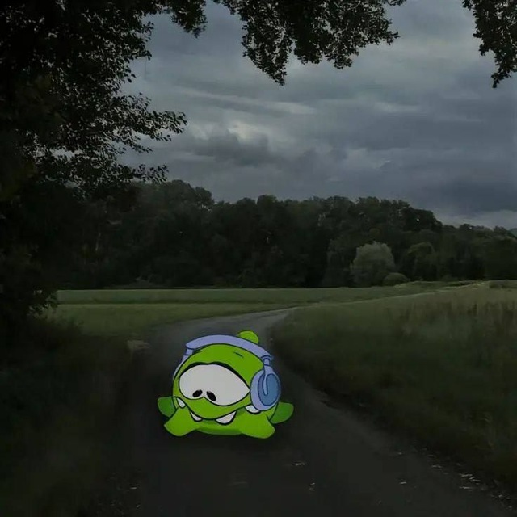

Просьба ознакомиться с небольшими правилами сайта:
Перед нажатием кнопки запуска музыки, пожалуйста, уменьшите громкость звука. Кнопка выключения музыки
временно не работает.
Чтобы остановить трек, который вы включили, просто перезагрузите страницу.
Для лучшего качества прослушивания музыки используйте наушники.
Внизу будут указаны ссылки на сборники песен исполнителей. Приятного прослушивания!

При нажатии на исполнителя вы будете перенаправлены на сборник:
Король и Шут
В 1988 году в Ленинграде у троих одноклассников — Михаила «Горшка» Горшенёва, Александра «Поручика» Щиголева
и
Александра «Балу» Балунова — возникла идея создания группы. Так появился проект с названием «Контора», который
был ориентирован на игру в стиле «панк-рок» с соответствующими текстами и музыкой.
Знакомство Михаила Горшенёва с Андреем «Князем» Князевым произошло в 1989 году в реставрационном училище
Ленинграда. Они проходили практику в Эрмитаже, где получили работу, закончив училище. Эрмитаж выделил
реставраторам мастерскую на Миллионной улице, где они организовали первую репетиционную точку группы «Король и
Шут». Годом спустя знакомство кардинально изменило концепцию группы. Князев пишет на музыку тексты,
представляющие собой разнохарактерные мини-истории, в основе которых лежат сюжеты из русского фольклора,
фэнтези,
мифов и легенд. Большинство историй носит характер «страшных сказок», иные — юмористичный, шутливый оттенок.
Название «Король и Шут» группа взяла в 1990 году. До этого времени на обсуждение музыкантами выносились такие
варианты, как «Зарезанный одуванчик», «Армагеддон», «Апокалипсис» и «Король Шутов», из которых последний и лёг в
основу официального названия.
В 1991—1992 годах на студии были записаны первые несколько песен группы: «Мёртвая женщина», «Охотник», «Король и
Шут», «В долине болот», две из которых — «Охотник» и «В долине болот» — прозвучали по радио. Это был первый
радиоэфир начинающей группы «Король и Шут». Первый раз перед публикой группа выступила в 1992 году в здании
закрывшегося ленинградского рок-клуба на улице Рубиншейна.
В то же время группа задумалась чтобы записаться на профессиональной студии. Они познакомились с хозяином
заведения Михаилом Колчугиным. Записали четыре песни: «В долине болот», «Мёртвая земля», «Ауфидерай», «История о
мёртвой женщине».
В 1992 году в школе ритма Игоря Голубева, располагавшейся в здании Ленинградского рок-клуба на Рубинштейна 13,
состоялось первое публичное выступление «Короля и Шута». Именно с этого момента группа «Король и Шут» ведёт своё
летоисчисление.
В это же время группа записывает пять песен в студии Михаила Кольчугина: «Заскучал король», «Охотник», «Песня на
английском», «Свечи гаснут», а названия пятой не было, но в будущем из неё получится песня «Возвращение
колдуна».
В 1993 году группа «Король и Шут» записала свой первый электрический магнитоальбом — «Истинный убийца» в студии
Михаила Кольчугина.
Группа записала 10 песен. За ударные сел младший брат Михаила Алексей Горшенёв, а за клавишные и на бэк-вокале —
Дмитрий Рябченко. Вскоре после этого альбома Князь стал реже играть на бас-гитаре и перешёл на вокал. А
бас-гитару
взял Рябчик. Альбом никогда до 2018 официально не издавался, а до этого времени плёнка передавалась фанатами.
С 1993 года «Король и Шут» иногда выступали в клубе «Там-Там», популярном в неформальных кругах того времени.
Вскоре у группы появляется директор «Лысый».В тот период группа впервые выступает в Москве.
В 1994 году в студии Михаила Кольчугина был записан неофициальный альбом «Будь как дома, путник…». Многие песни
из
этого альбома — это перезапись старых песен, но с более чистым звуком и профессиональными аранжировками. За
ударные снова сел Поручик, но другие участники коллектива не были довольны его работой. С барабанами помог
«Денс»
Денис Можин. А сам альбом, который вышел ограниченным тиражом только на кассетах, долгое время считался среди
поклонников раритетом.
жасей Дуэйн Рикардо Онфрой родился 23 января 1998 года в городе Плантейшен (Флорида, США). Его мать
американка, отец — ямаец. Вследствие низкого финансового положения матери своё детство Онфрой провёл вместе
с бабушкой в Помпано-Бич и Лодерхилле. Имел египетские, индийские, немецкие, итальянские и ямайские корни. В
шестилетнем возрасте напал с ножом на мужчину, который пытался обидеть его мать. Перед тем, как его
заставили жить с бабушкой, Джасей попал в программу для проблемной молодёжи.
Интерес к музыке Онфрой проявил, когда тётя убедила его записаться в школьный хор, а позже и в церковный хор.
Вскоре его выгнали из школьного хора за нападение на одного из учеников. Вследствие многочисленных драк его
вскоре также выгнали из школы. После мать поселила Джасея в Шериданский дом (дом христианской организации,
которая предоставляла убежище и образование для двенадцати-пятнадцатилетних детей), где он провёл шесть месяцев
и начал слушать ню-метал, тяжёлый рок, рэп, а также пытался научиться игре на гитаре и пианино. Впоследствии
учился в средней школе Пайпер, но бросил учёбу в десятом классе.
Онфрой неоднократно имел проблемы с законом и попадал за решётку в связи с незаконным владением оружием,
грабежом, побоями. В феврале 2018 года Онфрой опубликовал в Instagram информацию о том, что
собирается вернуться в школу, в марте 2018 года объявил, что собирается поступать в колледж, дабы получить
аттестат о среднем образовании. Также Онфрой публично рассказывал о своей борьбе с
депрессией.
Narvent is 19 y.o according to Spotify’s profile bio. I think they are a duo or maybe just a collaborated
artist. (Переведен с помощью google translete) Согласно биографии профиля Spotify, VØJ 19 лет. Я думаю, что это
дуэт или, может быть, просто совместный артист.
Валерий Алексеевич Зайцев родился 24 октября 2003 года в Крымске. В детстве увлекался творчеством Скриллекса,
Massive Attack, Depeche Mode, Лудакриса, Xzibit, Доктора Дре и других. Музыкой начал заниматься в 12 лет,
набираясь опыта в программе FL Studio.
В январе 2021 года написал песню «Close Eyes» и 1 февраля выложил её на YouTube и «ВКонтакте». Спустя полгода
после выпуска релиз стал широко известен в SoundCloud и TikTok, и примерно в то же время, 25 мая, появился на
стриминговых сервисах. По итогам 2021 года трек оказался самым популярным среди геймеров, основываясь на
статистике стриминговых сервисов. Таким образом, Дивёрст стал одним из первопроходцев и популяризаторов жанра
дрифт-фонк в России и мире.
21 февраля 2023 года состоялся выпуск игры Atomic Heart, к которой Валерий написал несколько ремиксов к песне
Игоря Скляра «Комарово» в жанрах дрифт-фонк (также добавлена замедленная версия) и драм-н-бейс. Сборник с
саундтреками был опубликован в день выпуска игры и получил одноимённое с игрой название — Atomic Heart, Vol. 1
(Original Game Soundtrack). Фонк-версия Дивёрста стала широко известна в русскоговорящей среде и заняла
лидирующие места в чартах национальных цифровых стриминговых сервисов — например, сообщается о лидирующем месте
в чарте «Яндекс Музыки».
25 апреля 2023 года был номинирован в ежегодный рейтинг российского Forbes «30 до 30» в категории
«Музыка».